Typographical glossary¶
‘The time has come,’ the Walrus said,‘To talk of may things:Of shoes- and ships- and sealing-wax-Of cabbages- and kings-And why the sea is boiling hot-And whether pigs have wings.’—The Walrus and the Carpenter – Lewis Carroll
- Abjad
Abjad is the technical term for the type of writing system used by Semitic languages (Hebrew, Arabic, etc.), where there are glyphs for all the consonants but the reader must be prepared to guess what vowel to add between two consonants.
Both Hebrew and Arabic have optional vowel marks and are called “impure” abjads. Ancient Phoenician had nothing but consonants and is a “pure” abjad.
See Also: alphabet, abugida, syllabary and the relevant Wikipedia article.
- Abugida
An abugida is somewhere in between an alphabet and a syllabary. The Indic writing systems are probably the best known abugidas.
In most abugidas there are independant glyphs for the consonants, and each consonant is implicitly followed by a default vowel sound. All vowels other than the default will be marked by either diacritics or some other modification to the base consonant.
An abugida differs from a syllabary in that there is a common theme to the the images representing a syllable beginning with a given consonant (that is, the glyph for the consonant), while in a syllabary each syllable is distinct even if two start with a common consonant.
An abugida differs from an abjad in that vowels (other than the default) must be marked in the abugida.
See Also: alphabet, abjad, syllabary and the relevant Wikipedia article.
- Advance Width

The distance between the start of this glyph and the start of the next glyph. Sometimes called the glyph’s width. See also Vertical Advance Width.
- Alphabet
A writing system where there are glyphs for all phonemes – consonants and vowels alike – and (in theory anyway) all phonemes in a word will be marked by an appropriate glyph.
See Also: abjad, abugida, syllabary and the relevant Wikipedia article.
- Apple Advanced Typography
Apple’s extension to basic TrueType fonts. Includes contextual substitutions, ligatures, kerning, etc. Also includes distortable fonts.
- Ascender
A stem on a lower case letter which extends above the x-height. “l” has an ascender.
See also X-height, Cap-height, Descender, Overshoot, Baseline
- Anchor Class
Used to specify mark-to-base and cursive GPOS subtables. See overview.
- Ascent
In traditional typography the ascent of a font was the distance from the top of a block of type to the baseline.
Its precise meaning in modern typography seems to vary with different definers.
- ATSUI
Apple’s advanced typographical system. Also called Apple Advanced Typography.
- Baseline
The baseline is the horizontal line on which the (latin, greek, cyrillic) letters sit. The baseline will probably be in a different place for different scripts. In Indic scripts most letters descend below the baseline. In CJK scripts there is also a vertical baseline usually in the middle of the glyph. The BASE and bsln tables allow you to specify how the baselines of different scripts should be aligned with respect to each other.
See also X-height, Cap-height, Ascender, Descender, Overshoot
- Bézier curve
- Bézier splines
Bézier curves are described in detail in the Bézier section of the main manual.
- Bidi
- He looked thoughtful and grave- but the orders he gaveWere enough to bewilder the crew.When he cried ‘Steer to starboard, but keep her head larboard!’What on earth was the helmsman to do?
—The Hunting of the Snark – Lewis Carroll
Bi-Directional text. That is a section of text which contains both left-to-right and right-to-left scripts. English text quoting Arabic, for example. Things get even more complex with nested quotations. The Unicode standard contains an algorithm for laying out Bidi text. See also: Boustrophedon.
- Black letter
Any of various type families based on medieval handwriting.
See also gothic.
- BMP
- Basic Multilingual Plane
The first 65536 code points of Unicode. These contain most of the ordinary characters in the modern world. See Also
- Bold
A common font style. The stems of the glyphs are wider than in the normal font, giving the letters a darker impression. Bold is one of the few LGC styles that translate readily to other scripts.
- Bopomofo
A (modern~1911) Chinese (Mandarin) alphabet used to provide phonetic transliteration of Han ideographs in dictionaries.
- Boustrophedon
- 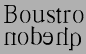
Writing “as the ox plows”, that is alternating between left to right and right to left writing directions. Early alphabets (Old Canaanite, and the very early greek writings (and, surprisingly, fuþark)) used this. Often the right to left glyphs would be mirrors of the left to right ones. As far as I know, no modern writing system uses this method (nor does OpenType have any support for it). See Also Bidi.
- Cap-height
- 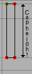
The height of a capital letter above the baseline (a letter with a flat top like “I” as opposed to one with a curved one like “O”).
- CFF
Compact Font Format most commonly used within OpenType postscript fonts, but is a valid font format even without a SFNT wrapper. This is the native font format for fonts with PostScript Type2 charstrings.
- Character
A character is a Platonic ideal reified into at least one glyph. For example the letter “s” is a character which is reified into several different glyphs: “S”, “s”, “s”, long-s, etc. Note that these glyphs can look fairly different from each other, however although the glyph for an integral sign might be the same as the long-s glyph, these are in fact different characters.
- Character set
A character set is an unordered set of characters
- CID
Character Identifier, a number. In some CJK PostScript fonts the glyphs are not named but are refered to by a CID number.
- CID-keyed font
A PostScript font in which the glyphs are index by CID and not by name.
- CJK
Chinese, Japanese, Korean. These three languages require fonts with a huge number of glyphs. All three share a writing system based on Chinese ideographs (though they have undergone separate evolution in each country, indeed mainland Chinese fonts are different from those used in Taiwan and Hong Kong).
Japanese and Korean also have phonetic syllabaries. The Japanese have two syllabaries, Hiragana and katakana which have about 60 syllables. The Koreans have one syllabary, hangul with tens of thousands of syllables.
- CJKV
Chinese, Japanese, Korean, Vietnamese. These four languages require fonts with a huge number of glyphs.
- Condensed
A condensed font is one where the space between the stems of the glyphs, and the distance between glyphs themselves has been reduced.
- Conflicting hints
If a glyph contains two hints where the start or end point of one is within the range of the other then these hints conflict. They may not be active simultaneously.
- Descender
A stem on a lower case letter which extends below the baseline. “p” has a descender.
See also X-height, Cap-height, Ascender, Overshoot, Baseline
- Descent
In traditional typography the descent of a font was the distance from the bottom of a block of type to the baseline.
Its precise meaning in modern typography seems to vary with different definers.
- Device Table
A concept in OpenType which allows you to enter spacing adjustments geared to rasterization at particular pixel sizes. If a kerning value that works most of the time leads to an ugly juxtaposition of glyphs on a 12 pixel high font, then you can add a special tweak to the spacing that only is applicable at 12 pixels (and another one at 14 and 18, or whatever is needed). Similar functionality is needed for anchored marks.
- Didot point
The European point. 62 2/3 points per 23.566mm ( 2.66pt/mm or 67.55pt/inch ). There is also a “metric” didiot point: .4mm.
- Distortable font
- em
A linear unit equal to the point size of the font. In a 10 point font, the em will be 10 points. An em-space is white-space that is as wide as the point size. An em-dash is a horizontal bar that is as wide as the point size.
An em-square is a square one em to each side. In traditional typography (when each letter was cast in metal) the glyph had to be drawn within the em-square.
- em unit
In a scalable font the “em” is subdivided into units. In a postscript font there are usually 1000 units to the em. In a TrueType font there might be 512, 1024 or 2048 units to the em. In an Ikarus font there are 15,000 units. FontForge uses these units as the basis of its coordinate system.
- en
One half of an “em”
- Encoding
An encoding is a mapping from a set of bytes onto a character set. It is what determines which byte sequence represents which character. The words “encoding” and “character set” are often used synonymously. The specification for ASCII specifies both a character set and an encoding. But CJK character sets often have multiple encodings for the character set (and multiple character sets for some encodings).
In more complicated cases it is possible to have multiple glyphs associated with each character (as in arabic where most characters have at least 4 different glyphs) and the client program must pick the appropriate glyph for the character in the current context.
- Eth – Edh
The old germanic letter “ð” for the voiced (English) “th” sound (the sound in “this” – most English speakers aren’t even aware that “th” in English has two sounds associated with it, but it does, see also Thorn)
- Even-Odd Fill rule
To determine if a pixel should be filled using this rule, draw a line from the pixel to infinity (in any direction) then count the number of times contours cross this line. If that number is odd then fill the point, if it is even then do not fill the point. This method is used for fonts by postscript rasterizers after level 2.0 of PostScript. See Also Non-Zero Winding Number Fill rule.
- Extended
An extended font is one where the space between the stems of the glyphs, and the distance between glyphs themselves has been increased.
- Extremum
A point on a curve where the curve attains its maximum or minimum value. On a continuous curve this can happen at the endpoints (which is dull) or where dx/dt=0 or dy/dt=0.
- Features (OpenType)
When creating fonts for complex scripts (and even for less complex scripts) various transformations (like ligatures) must be applied to the input glyphs before they are ready for display. These transformations are identified as font features and are tagged with (in OpenType) a 4 letter tag or (in Apple) a 2 number identfier. The meanings of these features are predefined by MicroSoft and Apple. FontForge allows you to tag each lookup with one or several features when you create it (or later).
- Feature File
This is a text syntax designed by Adobe to describe OpenType features. It can be used to move feature and lookup information from one font to another.
- Feature/Settings (Apple)
These are roughly equivalent to OpenType’s Features above, they are defined by Apple.
- Font
A collection of glyphs, generally with at least one glyph associated with each character in the font’s character set, often with an encoding.
A font contains much of the information needed to turn a sequence of bytes into a set of pictures representing the characters specified by those bytes.
In traditional typesetting a font was a collection of little blocks of metal each with a graven image of a letter on it. Traditionally there was a different font for each point-size.
- Font Family, or just Family
A collection of related fonts. Often including plain, italic and bold styles.
- FontForge
This.
- FreeType
A library for rasterizing fonts. Used extensively in FontForge to understand the behavior of truetype fonts and to do better rasterization than FontForge could unaided.
- Fractur
The old black letter writing style used in Germany up until world war II.
See also gothic.
- Fuþark
- Futhark
The old germanic runic script
- Ghost Hint
Sometimes it is important to indicate that a horizontal edge is indeed horizontal. But the edge has no corresponding edge with which to make a normal stem. In this case a special hint is used with a width of -20 (or -21). A ghost hint must lie entirely within a glyph. If it is at the top of a contour use a width of -20, if at the bottom use -21. Ghost hints should also lie within BlueZones.
(The spec also mentions vertical ghost hints, but as there are no vertical bluezones it is not clear how these should be used).
- Glyph
A glyph is an image, often associated with one or several characters. So the glyph used to draw “f” is associated with the character f, while the glyph for the “fi” ligature is associated with both f and i. In simple latin fonts the association is often one to one (there is exactly one glyph for each character), while in more complex fonts or scripts there may be several glyphs per character (In renaissance printing the letter “s” had two glyphs associated with it, one, the long-s, was used initially and medially, the other, the short-s, was used only at the end of words). And in the ligatures one glyph is associated with two or more characters.
Fonts are collections of glyphs with some form of mapping from character to glyph.
- Grid Fitting
Before TrueType glyphs are rasterized they go through a process called grid fitting where a tiny program (associated with each glyph) is run which moves the points on the glyph’s outlines around until they fit the pixel grid better.
- Gothic
The German monks at the time of Gutenberg used a black-letter writing style, and he copied their handwriting in his typefaces for printing. Italian type designers (after printing spread south) sneered at the style, preferring the type designs left by the Romans. As a term of contempt they used the word gothic, the style of the goths who helped destroy the roman empire.
- Graphite tables
Graphite is an extension to TrueType which embeds several tables into a font containing rules for contextual shaping, ligatures, reordering, split glyphs, bidirectionality, stacking diacritics, complex positioning, etc.
This sounds rather like OpenType – except that OpenType depends on the text layout routines knowing a lot about the glyphs involved. This means that OpenType fonts cannot be designed for a new language or script without shipping a new version of the operating system. Whereas Graphite tables contain all that hidden information.
Apple’s Advanced Typography provides a better comparison, but Graphite tables are supposed to be easier to build.
SIL International provides a free Graphite compiler .
- Grotesque
See also Sans Serif.
- Han characters
The ideographic characters used in China, Japan and Korea (and, I believe, in various other asian countries as well (Vietnam?)), all based on the writing style that evolved in China.
- Hangul
The Korean syllabary. The only syllabary (that I’m aware of anway) based on an alphabet – the letters of the alphabet never appear alone, but only as groups of two or three making up a syllable.
- Hanja
The Korean name for the Han characters
- Hints
These are described in detail in the main manual. They help the rasterizer to draw a glyph well at small pointsizes.
- Hint Masks
At any given point on a contour hints may not conflict. However different points in a glyph may need conflicting hints. So every now and then a contour will change which hints are active. Each list of active hints is called a hint mask.
- Hiragana
One of the two Japanese syllabaries. Both Hiragana and Katakana have the same sounds.
- Ideographic character
A single character which represents a concept without spelling it out. Generally used to mean Han (Chinese) characters.
- Italic
A slanted style of a font, generally used for emphasis.
Italic differs from Oblique in that the transformation from the plain to the slanted form involves more than just skewing the letterforms. Generally the lower-case a changes to a, the serifs on lower-case letters like i (i) change, and the font generally gains a freer look to it.
- Jamo
The letters of the Korean alphabet. These are almost never seen alone, generally appearing in groups of three as part of a Hangul syllable. The Jamo are divided into three catagories (with considerable overlap between the first and third), the choseong – initial consonants, the jungseong – medial vowels, and the jongseong – final consonants. A syllable is composed by placing a choseong glyph in the upper left of an em-square, a jungseong in the upper right, and optionally a jongseong in the lower portion of the square.
- Kanji
The Japanese name for the Han characters.
- Katakana
One of the two (modern) Japanese syllabaries. Both Hiragana and Katakana have the same sounds.
- Kerning
- 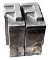
When the default spacing between two glyphs is inappropriate the font may include extra information to indicate that when a given glyph (say “T”) is followed by another glyph (say “o”) then the advance width of the “T” should be adjusted by a certain amount to make for a more pleasing display.
In the days of metal type, metal actually had to be shaved off the slug of type to provide a snugger fit. In the image on the side, the “F” on the left has had some metal removed so that a lower case letter could snuggle closer to it.
- Kern pair
A pair of glyphs for which kerning information has been specified.
- Kerning by classes
The glyphs of the font are divided into classes of glyphs and there is a large table which specifies kerning for every possible combination of classes. Generally this will be smaller than the equivalent set of kerning pairs because each class will usually contain several glyphs.
- Knuth, Donald
A mathematician who got so fed up with bad typesetting back in the 1970&80s that he created his own font design system and typographical layout program called, respectively, MetaFont and TeX.
- Left side bearing
-
The horizontal distance from a glyph’s origin to its leftmost extent. This may be negative or positive.
- Lemur
A monotypic genus of prosimian primates, now found only on Madagascar but formally (about 50 million years ago) members of this family were much more wide spread.
- Ligature
A single glyph which is composed of two adjacent glyphs. A common example in the latin script is the “fi” ligature 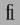 which has a nicer feel to it than the sequence 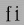.
- LGC
Latin, Greek, Cyrillic. These three alphabets have evolved side by side over the last few thousand years. The letter forms are very similar (and some letters are shared). Many concepts such as “lower case”, “italic” are applicable to these three alphabets and not to any others. (OK, Armenian also has lower case letters).
- Manyogana
An early Japanese script, ancestral to both hiragana and katakana. Manyogana used kanji for their phontic sounds, and over the years these kanji were simplified into hiragana and katahana.
- Metal Type
-
Once upon a time, printing presses smashed plates full of slugs of metal against paper.
- Monospace
A font in which all glyphs have the same advance width. These are sometimes called typewriter fonts.
- Multi-layered fonts
(FontForge’s own term) PostScript type3 fonts and SVG fonts allow for more drawing possibilities than normal fonts. Normal fonts may only be filled with a single color inherited from the graphics environment. These two fonts may be filled with several different colors, stroked, include images, have gradient fills, etc..
See Also
Setting font type with Element->Font Info->Layers
- Multiple Master Font
A multiple master font is a PostScript font schema which defines an infinite number of related fonts. Multiple master fonts can vary along several axes, for example you might have a multiple master which defined both different weights and different widths of a font family, it could be used to generate: Thin, Normal, Semi-Bold, Bold, Condensed, Expanded, Bold-Condensed, etc.
Adobe is no longer developing this format. Apple has a format which acheives the same effect but has not produced many examples. FontForge supports both.
- Namelist
A mapping from unicode code point to glyph name.
- Non-Zero Winding Number Fill rule
To determine if a pixel should be filled using this rule draw a line from here to infinity (in any direction) and count the number of times contours cross this line. If the contour crosses the line in a clockwise direction add 1, of the contour crosses in a counter clockwise direction subtract one. If the result is non-zero then fill the pixel. If it is zero leave it blank. This method is used for rasterizing fonts by truetype and older (before version 2) postscript.
See Also Even-Odd Fill Rule
- Ogham
The old Celtic inscription script.
- OpenType
A type of font. It is an attempt to merge postscript and truetype fonts into one specification.
An opentype font may contain either a truetype or a postscript font inside it.
It contains many of the same data tables for information like encodings that were present in truetype fonts.
Confusingly it is also used to mean the advanced typographic tables that Adobe and MicroSoft (but not Apple) have added to TrueType. These include things like contextual ligatures, contextual kerning, glyph substitution, etc.
And MS Windows uses it to mean a font with a ‘DSIG’ (Digital Signature) table.
- OpenType Tables
Each opentype font contains a collection of tables each of which contains a certain kind of information. See here for the tables used by FontForge.
- Oblique
A slanted style of a font, generally used for emphasis.
Oblique differs from Italic in that the transformation from the plain to the slanted form involves just skewing the letterforms.
- Overshoot
- 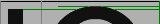
In order for the curved shape of the “O” to appear to be the same height as the flat top of the “I” it tends to “overshoot” the cap-height (or x-height), or undershoot the baseline by about 3% of the cap-height (or x-height). For a triangular shape (such as “A”) the overshoot is even greater, perhaps 5%.
These guidelines are based on the way the eye works and the optical illusions it generates and are taken from Peter Karow’s Digital Formats for Typefaces, p. 26).
The overshoot is also dependant on the point-size of a font, the larger the point-size the smaller the overshoot should be. Generally modern fonts will be used at multiple point-sizes, but in some font families there are multiple faces for the different point-sizes, and in such a case the overshoot will probably vary from face to face.
See also X-height,:term:Cap-height, Ascender, Descender, Baseline
- PANOSE
A system for describing fonts. See HP’s PANOSE Classification Metrics Guide, MicroSoft’s PANOSE structure (Windows) and Robert Stevahn’s PANOSE: An Ideal Typeface Matching System for the Web. There is also an extension called PANOSE 2.0 and an online discussion.
FontForge only knows about the classification scheme for Latin fonts. Other schemes exist for other scripts, such as Classifying Arabic Fonts Based on Design Characteristics: PANOSE-APANOSE.
- PfaEdit
This was the early name for FontForge. The original conception was that it would only edit type1 ASCII fonts (hence the name), it quickly metamorphosed beyond that point, but it took me three years to rename it.
- Phantom points
In a truetype font there are a few points added to each glyph which are not specified by the contours that make up the glyph. These are called phantom points. One of these points represents the left side bearing, and the other the advance width of the glyph. Truetype instructions (hints) are allowed to move these points around just as any other points may be moved – thus changing the left-side-bearing or the advance width. Early versions of TrueType supplied just these two phantoms, more recent versions also supply a phantom for the top sidebearing and a phantom for the vertical advance width.
- Pica
A unit of length defined (in the US at least) to be 35/83cm (or approximately 1/6th of an inch). This was used for measuring the length of lines of text (as “30 picas and 4 points long”), but not for measuring font heights.
In Renaissance typography, before there were points, sizes of type had names, and “pica” was used in this context. As: “Great Canon”, “Double Pica”, “Great Primer”, “English”, “Pica”, “Primer”, “Small Pica”, “Brevier”, “Nonpareil” and “Pearl” (each name representing a progressively smaller size of type). and See Caslon’s type specimen sheet on Wikipedia.
- Pica point
The Anglo-American point. With 72.27 points per inch ( 2.85pt /mm ).
- Point
A point is a unit of measurement. There were three (at least) different definitions for “point” in common usage before the advent of computers. The one in use in the Anglo-Saxon printing world was the “pica point” with 72.27 points per inch ( 2.85pt /mm ), while the one used in continental Europe was the didot point with 62 2/3 points per 23.566mm ( 2.66pt/mm or 67.54pt/inch ) and the French sometimes used the Mediaan point (72.78 points per inch, 2.86pt/mm).
The didiot and pica points were so arranged that text at a given point-size would have approximately the same cap-height in both systems, the didot point would have extra white-space above the capitals to contain the accents present in most non-English Latin based scripts.
This has the interesting side effect that a font designed for European usage should have a smaller proportion of the vertical em given over to the text body. I believe that computer fonts tend to ignore this, so presumably european printers now set with more leading.
As far as I can tell, computers tend to work in approximations to pica points (but this may be because I am in the US), PostScript uses a unit of 1/72nd of an inch.
Originally fonts were not described by point size, but by name. It was not until the 1730s that Pierre Fournier that created the point system for specifying font heights. This was later improved upon by François Didiot (whence the name of the point). In 1878 the Chicago Type Foundry first used a point system in the US. In 1886 the US point was standardized – the pica was defined to be 35/83cm, and the pica point defined to be 1/12th of that.
- Point Size
In traditional typography a 10pt font was one where the block of metal for each glyph was 10 points high. The point size of a font is the unleaded baseline to baseline distance.
- Point of inflection
A point on a curve where it changes from being concave downwards to concave upwards (or vice versa). Or in mathematical terms (for continuous curves) where \(\frac{d^2y}{dx^2} = 0\) or infinity.
Cubic splines may contain inflection points, quadratic splines may not.
- PostScript
PostScript is a page-layout language used by many printers. The language contains the specifications of several different font formats. The main (FontForge) manual has a section describing how PostScript differs from TrueType.
Type 1 – This is the old standard for PostScript fonts. Such a font generally has the extension .pfb (or .pfa). A type 1 font is limited to a one byte encoding (ie. only 256 glyphs may be encoded).
Type 2/CFF – This is the format used within OpenType fonts. It is almost the same as Type 1, but has a few extensions and a more compact format. It is usually inside a CFF wrapper, which is usually inside an OpenType font. The CFF font format again only allows a 1 byte encoding, but the OpenType wrapper extends this to provide more complex encoding types.
Type 3 – This format allows full postscript within the font, but it means that no hints are allowed, so these fonts will not look as nice at small point-sizes. Also most (screen) rasterizers are incapable of dealing with them. A type 3 font is limited to a one byte encoding (ie. only 256 glyphs may be encoded).
Type 0 – This format is used for collecting many sub-fonts (of Type 1, 2 or 3) into one big font with a multi-byte encoding, and was used for CJK or Unicode fonts.
Type 42 – A TrueType font wrapped up in PostScript. Sort of the opposite from OpenType.
CID – This format is used for CJK fonts with large numbers of glyphs. The glyphs themselves are specified either as type1 or type2 glyph format. The CID font itself has no encoding, just a mapping from CID (a number) to glyph. An set of external CMAP files are used to provide appropriate encodings as needed.
- Reference
A reference is a way of storing the outlines of one glyph in another (for example in accented glyphs). Sometimes called a “componant”.
- Right side bearing
-
The horizontal distance from a glyph’s rightmost extent to the glyph’s advance width. This may be positive or negative.
- Sans Serif
See the section on serifs.
- Script
A script is a character set and associated rules for putting characters together. Latin, arabic, katakana and hanja are all scripts.
- Serif
latin
greek
cyrillic
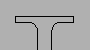a serif
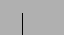sans serif
hebrew
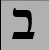bet serif
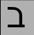sans serif
Back two thousand years ago when the Romans were carving their letters on stone monuments, they discovered that they could reduce the chance of the stone cracking by adding fine lines at the terminations of the main stems of a glyph.
These fine lines were called serifs, and came to have an esthetic appeal of their own. Early type designers added them to their fonts for esthetic rather than functional reasons.
At the end of the nineteenth and beginning of the twentieth centuries, type-designers started designing fonts without serifs. These were initially called grotesques because their form appeared so strange, they are now generally called sans-serif.
Other writing systems (Hebrew for one) have their own serifs. Hebrew serifs are rather different from latin (cyrillic, greek) serifs and I don’t know their history. Hebrew serifs only occur at the top of a glyph
I would welcome examples from other scripts of serifed and sans-serifed glyphs.
- SFD
SplineFont DataBase. These are FontForge’s own personal font representation. The files are ASCII and vaguely readable, the format is described here. As of 14 May 2008 the format has been registered with IANA for a MIME type: application/vnd.font-fontforge-sfd.
Other people use sfd too. (Unfortunately)
Tops-10, on the Digital PDP-10 used sfd to mean “Sub File Directory”. Tops-10 made a distinction between top-level (home) directories, called “user file directories”, and sub-directories.
TeX uses it to mean “Sub Font Definition” where a TeX sfd file contains information on how to break a big CJK or Unicode font up into small sub-fonts, each with a 1 byte encoding which TeX (or older versions of TeX) needed.
- SFNT
The name for the generic font format which contains TrueType, OpenType, Apple’s bitmap only, X11’s bitmap only, obsolete ‘typ1’ fonts and Adobe’s SING fonts (and no doubt others). The SFNT format describes how font tables should be laid out within a file. Each of the above formats follow this general idea but include more specific requirements (such as what tables are needed, and the format of each table).
- SIP
Supplementary Ideographic Plane (0x20000-0x2FFFF) of unicode. Used for rare Han characters (most are no longer in common use) See Also
- SMP
Supplementary Multilingual Plane (0x10000-0x1FFFF) of unicode. Used for ancient and artificial alphabets and syllabaries – like Linear B, Gothic, and Shavian. See Also
- Spline
A curved line segment. See the section in the manual on splines. The splines used in FontForge are all second or third order Bézier splines (quadratic or cubic), and Raph Levien’s clothoid splines.
- SSP
Supplementary Special-purpose Plane (0xE0000-0xEFFFF) of unicode. Not used for much of anything. See Also
- State machine
A state machine is like a very simple little program, they are used on the mac for performing contextual substitutions and kerning. The state machine dialog is reachable from Element->Font Info->Lookups
The “state machine” consists of a table of states, each state in turn consists of a series of potential transitions (to the same or different states) depending on the input. In state machines within fonts, the machine starts out in a special state called the start state, and reads the glyph stream of the text. Each individual glyph will cause a state transition to occur. As these transitions occur the machine may also specify changes to the glyph stream (conditional substitutions or kerning).
- Strike
A particular instance of a font. Most commonly a bitmap strike is a particular pixelsize of a font.
- Style
There are various conventional variants of a font. In probably any writing system the thickness of the stems of the glyphs may be varied, this is called the weight of a font. Common weights are normal and bold.
In LGC alphabets an italic (or oblique) style has arisen and is used for emphasis.
Fonts are often compressed into a condensed style, or expanded out into an extended style.
Various other styles are in occasional use: underline, overstrike, outline, shadow.
- SVG
Scalable Vector Graphics. An XML format used for drawing vector images. It includes a font format.
- Syllabary
A syllabary is a phonetic writing system like an alphabet. Unlike an alphabet the sound-unit which is written is a syllable rather than a phoneme. In Japanese KataKana the sound “ka” is represented by one glyph. Syllabaries tend to be bigger than alphabets (Japanese KataKana requires about 60 different characters, while the Korean Hangul requires tens of thousands).
See Also: abjad, abugida, alphabet and the relevant Wikipedia article.
- TeX
- Thorn
The germanic letter “þ” used for the unvoiced (English) “th” sound (as in the word “thorn”), I believe this is approximately the same sound value as Greek Theta. Currently a corrupt version of this glyph survives as “y:sup:e” for “the”. See also Eth.
- True Type
A type of font invented by Apple and shared with MicroSoft. It specifies outlines with second degree (quadratic) Bézier curves, contains innovative hinting controls, and an expandable series of tables for containing whatever additional information is deemed important to the font.
Apple and Adobe/MicroSoft have expanded these tables in different ways to include for advanced typographic features needed for non-latin scripts (or for complex latin scripts). See Apple Advanced Typography and OpenType.
- TrueType Tables
Each truetype font contains a collection of tables each of which contains a certain kind of information. See here for the tables used by FontForge.
- Type 1
A type of PostScript font which see.
- Type 2
A type of PostScript font, used within OpenType font wrappers.
- Type 3
A very general type of PostScript font, which see.
- Type 0
A type of PostScript font, which see.
- Type High
In the days of metal type this was the height of the piece of metal – the distance from the printing surface to the platform on which it rested.
- Typewriter
See Monospace.
- Unicode
A character set/encoding which tries to contain all the characters currently used in the world, and many historical ones as well. See the Unicode consortium.
- Undershoot
See the explanation at Overshoot.
- UniqueID
This is a field in a PostScript font, it was formerly used as a mechanism for identifying fonts uniquely, then Adobe decided it was not sufficient and created the XUID (extended Unique ID) field. Adobe has now decided that both are unneeded.
There is a very similar field in the TrueType ‘name’ table.
- UseMyMetrics
This is a truetype concept which forces the width of an composite glyph (for example an accented letter) to be the same as the width of one of its components (for example the base letter being accented).
- Vertical Advance Width
CJK text is often written vertically (and sometimes horizontally), so each CJK glyph has a vertical advance as well as a horizontal advance.
- Weight
The weight of a font is how thick (dark) the stems of the glyphs are. Traditionally weight is named, but recently numbers have been applied to weights.
Thin
100
Extra-Light
200
Light
300
Normal
400
Medium
500
Demi-Bold
600
Bold
700
Heavy
800
Black
900
Nord
Ultra
- Width
This is a slightly ambiguous term and is sometimes used to mean the advance width (the distance from the start of this glyph to the start of the next glyph), and sometimes used to mean the distance from the left side bearing to the right side bearing.
- X-height
- 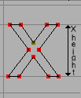
The height of a lower case letter above the base line (with a flat top like “x” or “z” or “v” as opposed to one with a curved top like “o” or one with an ascender like “l”) .
See also Cap-height, Ascender, Descender, Overshoot, Baseline
- XUID
Extended Unique ID in a PostScript font. Now somewhat obsolete. See the explanation at UniqueID.
- Zapf, Hermann
Outstanding modern font designer.